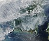

anthropogenic

Definition: Human impact on the environment (or anthropogenic impact) refers to changes to biophysical environments and to ecosystems, biodiversity, and natural resources caused directly or indirectly by humans. Modifying the environment to fit the needs of society is causing severe effects including global warming, environmental degradation (such as ocean acidification), mass extinction and biodiversity loss, ecological crisis, and ecological collapse. Some human activities that cause damage (either directly or indirectly) to the environment on a global scale include population growth, overconsumption, overexploitation, pollution, and deforestation. Some of the problems, including global warming and biodiversity loss, have been proposed as representing catastrophic risks to the survival of the human species.The term anthropogenic designates an effect or object resulting from human activity. The term was first used in the technical sense by Russian geologist Alexey Pavlov, and it was first used in English by British ecologist Arthur Tansley in reference to human influences on climax plant communities. The atmospheric scientist Paul Crutzen introduced the term "Anthropocene" in the mid-1970s. The term is sometimes used in the context of pollution produced from human activity since the start of the Agricultural Revolution but also applies broadly to all major human impacts on the environment. Many of the actions taken by humans that contribute to a heated environment stem from the burning of fossil fuel from a variety of sources, such as: electricity, cars, planes, space heating, manufacturing, or the destruction of forests.
Source: Wikipedia
Wikipedia Page (Something wrong with this association? Let us know.)
Wikidata Page (Something wrong with this association? Let us know.)
Occurs in: